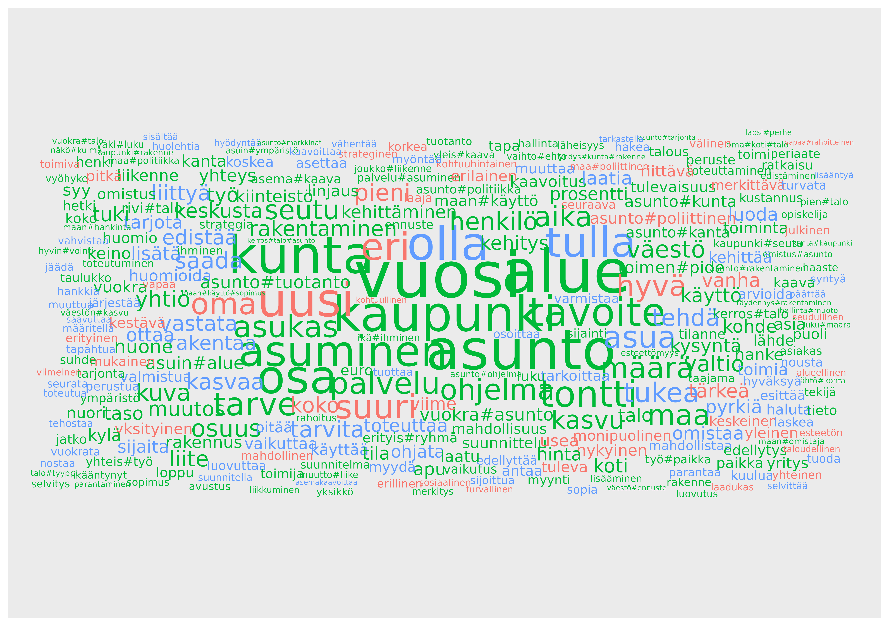

Aim is to filter out uninteresting, and potentially false terms.
Already filtered version of aspol is saved with name
aspol_filtered.
From UPOSTAG class we can see some interesting word classes and less interesting.
aspol |> count(LEMMA, UPOSTAG, name = "total", sort = TRUE) |>
slice_max(order_by = total, n = 1, by = UPOSTAG) |> print(n = 16)
#> # A tibble: 16 × 3
#> LEMMA UPOSTAG total
#> <chr> <chr> <int>
#> 1 . PUNCT 26931
#> 2 ja CCONJ 18254
#> 3 olla AUX 14858
#> 4 kaupunki NOUN 4112
#> 5 % SYM 3052
#> 6 joka PRON 2765
#> 7 myös ADV 2053
#> 8 uusi ADJ 1588
#> 9 olla VERB 1536
#> 10 että SCONJ 1335
#> 11 1 NUM 1183
#> 12 mukaan ADP 786
#> 13 Helsinki PROPN 733
#> 14 och X 236
#> 15 _ _ 73
#> 16 Kymp INTJ 12- Meaningless:
PUNCT,CCONJ,AUX,SYM,PRON,ADV,SCONJ,NUM,ADP,X,_,INTJ,PROPN
- Meaningful:
NOUN,VERB,ADJ
With FEATS column we can filter all abbreviations, foreign terms and ordinal numbers which are of class ADJ even though numbers.
noun_verb_adj |> filter(str_detect(FEATS, "Abbr=Yes|NumType=Ord|Foreign=Yes")) |>
count(FORM, LEMMA, FEATS, UPOSTAG, sort = TRUE)
#> # A tibble: 815 × 5
#> FORM LEMMA FEATS UPOSTAG n
#> <chr> <chr> <chr> <chr> <int>
#> 1 . . NumType=Ord ADJ 410
#> 2 Oy oy Abbr=Yes|Case=Nom|Number=Sing NOUN 398
#> 3 kpl kpl Abbr=Yes|Case=Par|Number=Sing NOUN 287
#> 4 o o Abbr=Yes|Case=Nom|Number=Sing NOUN 194
#> 5 Oy:n oy Abbr=Yes|Case=Gen|Number=Sing NOUN 142
#> 6 x x Abbr=Yes|Case=Nom|Number=Sing NOUN 120
#> 7 1. 1. NumType=Ord ADJ 116
#> 8 V V NumType=Ord ADJ 98
#> 9 3. 3. NumType=Ord ADJ 80
#> 10 2. 2. NumType=Ord ADJ 78
#> # ℹ 805 more rowsPossibly interesting is oy. Let’s keep that and remove
rest of abbreviated terms.
noun_verb_adj <- noun_verb_adj |> filter(!str_detect(FEATS, "Abbr=Yes|NumType=Ord|Foreign=Yes") | FEATS == "oy")There are many terms which are only one character long in their original form or in their lemma form.
noun_verb_adj |> filter(nchar(FORM) == 1 | nchar(LEMMA) == 1) |> count(FORM, LEMMA, sort = TRUE)
#> # A tibble: 119 × 3
#> FORM LEMMA n
#> <chr> <chr> <int>
#> 1 ) ) 565
#> 2 / / 89
#> 3 AP a 58
#> 4 - - 53
#> 5 AK a 48
#> 6 . . 43
#> 7 R R 43
#> 8 W W 43
#> 9 §:n § 38
#> 10 – – 33
#> # ℹ 109 more rowsRemove all those
Additionally, term m2 gets’s lemma for menrer#mammem!?
noun_verb_adj |> filter(FORM == "m2") |> count(FORM, LEMMA, sort = TRUE)
#> # A tibble: 2 × 3
#> FORM LEMMA n
#> <chr> <chr> <int>
#> 1 m2 menrer#mammen 44
#> 2 m2 m2 4
noun_verb_adj <- noun_verb_adj |> filter(FORM != "m2")
noun_verb_adj
#> # A tibble: 238,747 × 13
#> kunta sent ID FORM LEMMA UPOSTAG XPOSTAG FEATS HEAD DEPREL DEPS MISC
#> <chr> <int> <chr> <chr> <chr> <chr> <chr> <chr> <chr> <chr> <chr> <chr>
#> 1 Enont… 4 1 "KUN… kunta NOUN _ Case… 0 root _ "Spa…
#> 2 Enont… 5 1 "VUO… vuok… NOUN _ Case… 2 nmod:… _ "Spa…
#> 3 Enont… 5 2 "KEH… kehi… NOUN _ Case… 0 root _ "Spa…
#> 4 Enont… 7 1 "Ses… sese ADJ _ Case… 0 root _ "Spa…
#> 5 Enont… 18 1 "ENO… enon… NOUN _ Case… 0 root _ "Spa…
#> 6 Enont… 19 2 "teh… tehdä VERB _ Mood… 0 root _ "_"
#> 7 Enont… 19 3 "yhe… yhes NOUN _ Case… 2 advmod _ "Spa…
#> 8 Enont… 21 1 "\fS… sisä… NOUN _ Case… 0 root _ "Spa…
#> 9 Enont… 21 3 "Joh… johd… NOUN _ Case… 1 appos _ "_"
#> 10 Enont… 21 5 "tet… tehda VERB _ Case… 3 appos _ "_"
#> # ℹ 238,737 more rows
#> # ℹ 1 more variable: doc <chr>Some false terms still. Especially OCR-processed documents like Enontekiö have a lot of nonsense terms.
Some terms which appear only in single document:
doc_count <- noun_verb_adj |> distinct(LEMMA, kunta) |> count(LEMMA, name = "dc")
noun_verb_adj |> left_join(doc_count) |> filter(dc == 1) |> count(kunta, LEMMA, sort = TRUE)
#> Joining with `by = join_by(LEMMA)`
#> # A tibble: 11,561 × 3
#> kunta LEMMA n
#> <chr> <chr> <int>
#> 1 Riihimäki piwlo 86
#> 2 Kuusamo kuusamo 72
#> 3 Mikkeli mikkelinen 55
#> 4 Helsinki kaupungin#kanslia 46
#> 5 Kemiönsaari smf. 42
#> 6 Kuopio joukko#liikenne#kaupunki 42
#> 7 Kuusamo kirjaamo@kuusamo.fi 36
#> 8 K K7#kunta 34
#> 9 Tuusula tuusulalainen 34
#> 10 Joensuu esi#tutkimus 31
#> # ℹ 11,551 more rows
noun_verb_adj <- noun_verb_adj |> left_join(doc_count) |> filter(dc >= 3) # LEMMA in at least 3 doc
#> Joining with `by = join_by(LEMMA)`
noun_verb_adj |> count(LEMMA, UPOSTAG) |> slice_max(order_by = n, n = 300) |>
ggplot(aes(label = LEMMA, size = n, colour = UPOSTAG)) +
geom_text_wordcloud_area(rm_outside = TRUE, shape = "square", use_richtext = FALSE) +
scale_size_area(max_size = 30)
# aspol_filtered <- noun_verb_adj
# usethis::use_data(aspol_filtered, overwrite = TRUE)